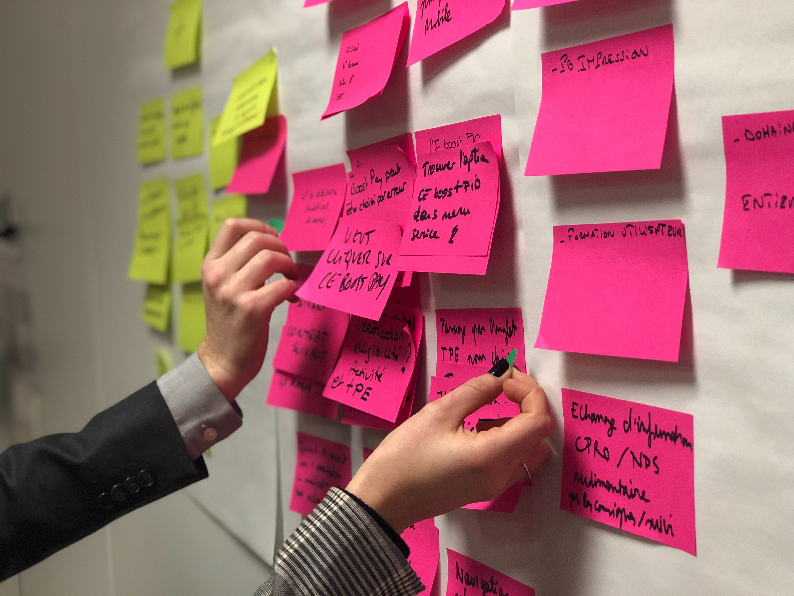

항상 원하는 바였습니다 제가 쓴 책이 출판되어 여러 사람들에게 읽히게 되는 것을 이 프롤로그를 쓰면서도 ‘정말 꿈이 실현될까?’라는 의구심을 떨치지는 못합니다. 하지만 지금의 제 결심으로 보건대 어떻게든 책은 나올 것 같습니다.
두려움이 엄습합니다. 제 노력의 결과물에 대해서는 대단히 만족하고 '야! 잘 썼다. '라고 자화자찬을 하지만 막상 탈고하고 보니 우리 집사람한테도 보여주기가 싫습니다. 비난받을까 봐, 쑥스러워서 뭐 이런 감정때문입니다. 또 있습니다. 사람들로 하여금 이 책을 돈 들여 사게 하고, 읽기 위해 그 금쪽같은 시간을 할애해 달라고 할 만한 가치가 이 책에 있을까? 하는 것입니다. 이것이 정말 두려운 이유죠. 어쨌든 주사위는 던져졌고 최선을 다해 저를 이 책에 넣었습니다.